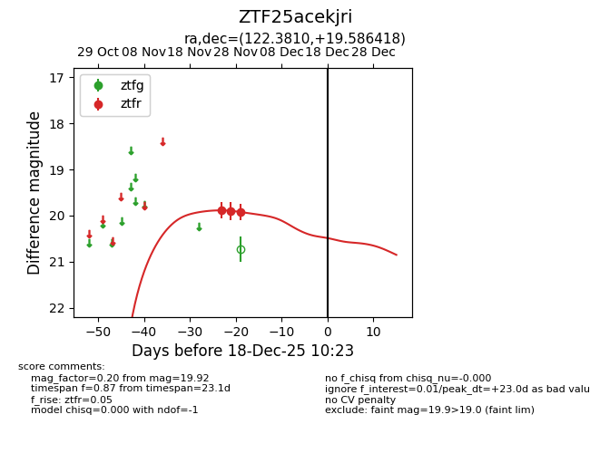
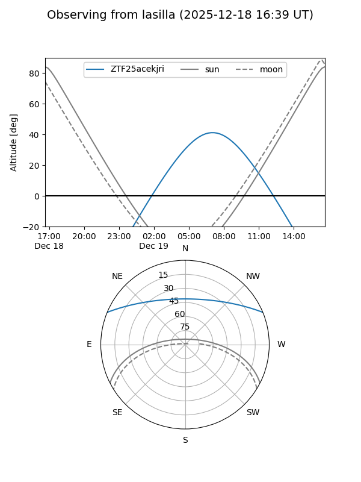
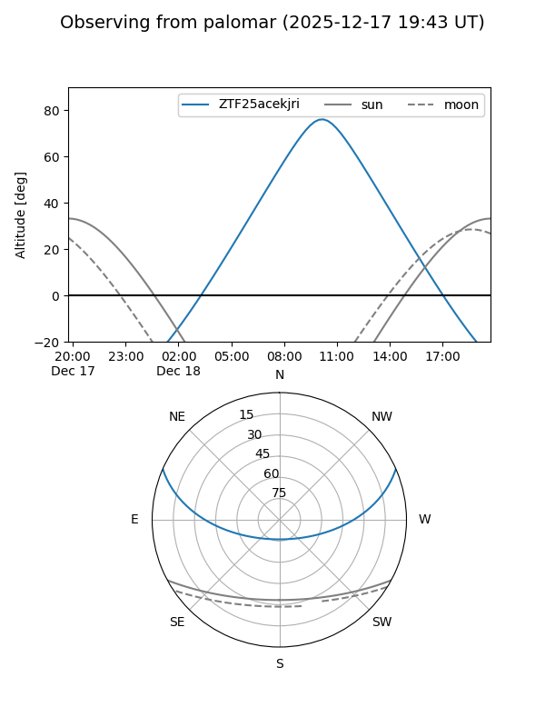

ZTF25acekjri
Target ZTF25acekjri at 2025-12-18 11:17
Aliases and brokers:
FINK: fink-portal.org/ZTF25acekjri
Lasair: lasair-ztf.lsst.ac.uk/objects/ZTF25acekjri
ALeRCE: alerce.online/object/ZTF25acekjri
alt names
ZTF25acekjri (ztf,fink_ztf)
Coordinates:
equatorial (ra, dec) = 122.3810,+19.58642
equatorial (HMS+DMS) = 08:09:31.44,+19:35:11.10
galactic (l, b) = (203.0434,+25.66126)
Photometry
last ztfr=19.92
3 ztfr detections
Lightcurve

Visibility


Additional plots